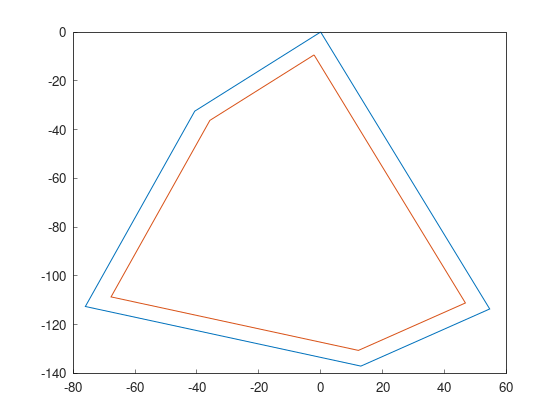

Part 3: Headland generator
Agricultural vehicles need space to turn between swaths. This area is called a headland.
In Fields2Cover, the headland generator will take a F2CCells and the width of the headland as input, and it will return another `F2CCells` of the same field without the headlands.
Lets create a random field with 5 sides and 1e4 meters squared of area, and a robot with 2 meters of width.
f2c::Random rand(42);
F2CField field = rand.generateRandField(1e4, 5);
F2CCells cells = field.getField();
F2CRobot robot (2.0, 26.0);
rand = f2c.Random(42);
field = rand.generateRandField(1e4, 5);
cells = field.getField();
robot = f2c.Robot(2.0, 26.0);
Constant width headland
This class creates a constant headland around the field.
f2c::hg::ConstHL const_hl;
F2CCells no_hl = const_hl.generateHeadlands(cells, 3.0 * robot.getWidth());
std::cout << "The complete area is " << cells.area() <<
", and the area without headlands is " << no_hl.area() << std::endl;
const_hl = f2c.HG_Const_gen();
no_hl = const_hl.generateHeadlands(cells, 3.0 * robot.getWidth());
print("The complete area is ", cells.area(),
", and the area without headlands is ", no_hl.area());
The complete area is 10000, and the area without headlands is 7676.63
On orange it is cells and in green it is no_hl